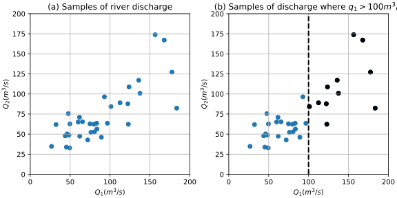
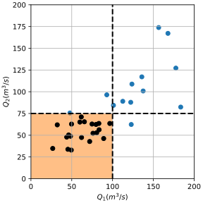
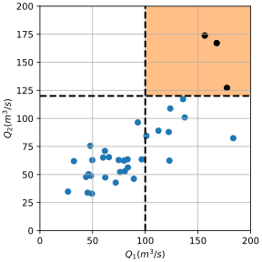
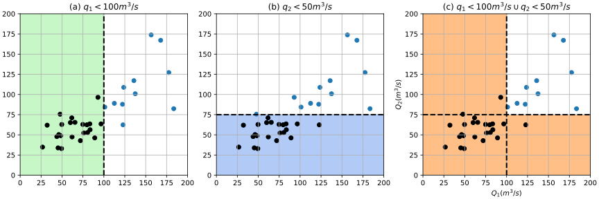
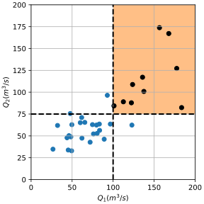
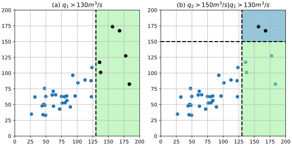

6.2. Multivariate Continuous Random Variables#
This page covers fundamental concepts for continuous random variables. As we are interested in considering more than one variable simultaneously, the term multivariate is used. We will start by translating the concepts covered on the previous page from discrete events, allowing us to arrive at a clear understanding of the concept of probabilistic dependence for multivariate continuous random variables.
Case Study: Two Rivers#
Here we will illustrate probability computations using a bivariate case. Consider the discharge of two rivers that are located in the same watershed, \(Q_1\) and \(Q_2\). There are 34 observations each of the discharges that were taken at the same time (this is important for multivariate distributions!). The observations are illustrated in the figure below (panel (a)).

Fig. 6.3 Samples of the discharges of two rivers (\(Q_1\) and \(Q_2\)): (a) paired observations, and (b) paired observations highlighting data for the case \(q_1>100 \;\textrm{m}^3\textrm{/s}\).#
Panel (b) in the figure above highlights the number of events where \(q_1>100 \;\textrm{m}^3\textrm{/s}\). We can thus compute the empirical probability:
As covered in the univariate continuous distribution chapter, this is equivalent to evaluating the empirical distribution \(F_{Q_1}(q_1)\).
Tip
The theory presented below applies to univariate and multivariate distributions in general (i.e., \(f_X(x)\), \(F_X(x)\)). However, this page keeps things simple by limiting probability computations to empirical bivariate distributions (i.e., scatter plots of the river discharge data, as above). Following pages introduce theoretical continuous multivariate distributions.
From Discrete to Continuous#
Although the previous page considered discrete events \(A\) and \(B\), the interpretation of probabilistic concepts are directly analogous to the case of continuous random variables.
Intervals#
Recall that a continuous random variable \(X\) can take an infinite number of values; this is because a realization of the random variable, \(x\), can be any real number (if the distribution is unbounded):
We are typically interested in a specific combination of values of a random variable, thus it is useful to denote an interval as \(\Omega\), for example
defines an interval of the random variable \(X\) between \(x=a\) and \(x=b\). Such intervals could be defined as the need arises, for example, \(\Omega\) contains the set \(x \in \mathbb{R}\) such that:
However, most of the time we are interested in intervals where the random variable is greater than or less than a specific value.
Given a specific value of interest \(x^*\) for a random variable \(X\), exceedance is the condition:
Similarly, non-exceedance is the condition:
Note that \(\Omega_{ne}\) is the complement of \(\Omega_{e}\).
Having defined intervals, it should now be obvious how to translate the concepts from discrete events to continuous random variables:
A discrete event is analogous to an interval \(x \subseteq \mathbb{R}\), and instead of the probability of event \(A\), \(P(A)\), we will refer to the probability of a realization \(x\) being in the interval \(\Omega\), denoted \(P[\Omega]\).
In the case of two random variables, \(\Omega\) is defined for both, and the interval becomes a region:
We can generalize these statements to define the region of interest over which we would like to integrate the multivariate probability density function to obtain the probability associated with that region.
Region of Interest as a Set of Intervals
Consider a multivariate distribution that describes a vector random variables \(X={X_1,X_2, \ldots , X_n}\), composed of \(n\) random variables \(X_i\). The region of interest \(\Omega\) is defined as the set:
where \(\Omega_i\) is the interval over which the probability density function is integrated, for each random variable \(X_i\).
Although it is difficult to construct the multivariate distribution and completely define \(\Omega\) in practice (especially for dimension \(n>2\)), the theoretical framework introduced in this chapter applies for all multivariate probability distributions, regardless of the model or approach used.
For now we will consider only the case where the multivariate region \(\Omega\) consists of sub-intervals defined for each of the random variables individually, as in the definition above. In a later section we will describe \(\Omega\) as a function of random variables. In addition, to easily distinguish the individual random variables, we introduce the term marginal:
A marginal distribution is the univariate distribution associated with a single random variable that is part of a multivariate distribution.
The probability \(q_1>100\) m\(^3\)/s computed in the Case Study Introduction section is a marginal probability.
One Random Variable#
The distribution of \(X\) is described with a probability density function (PDF), \(f_X(x)\). Integration of the density function over a specific interval \(\Omega\) gives the probability of the random variable \(X\) taking a value \(x\) within that interval, for example:
A commonly used interval is \(\Omega_{ne}\), the non-exceedance interval described above:
where \(F_X(x^*)\) is the cumulative distribution function (CDF), which by definition evaluates interval \(\Omega_{ne}\).
The exceedance probability, \(P[\Omega_{e}]\), and non-exceedance probability, \(P[\Omega_{ne}]\) are:
where \(x^*\) and \(y^*\) are values of interest for each random variable.
Two Random Variables#
Extending the notation above for the case of two random variables \(X\) and \(Y\), the bivariate distribution (i.e., the multivariate distribution for two random variables) has PDF \(f_{X,Y}(x,y)\) and CDF \(F_{X,Y}(x,y)\), respectively. Probabilities can be computed as follows:
The equation above is the the multivariate CDF and also illustrates a specific combination of two intervals (a region in the \(X,Y\) plane), described here with \(x^*\) and \(y^*\) as arbitrary values of interest:
Empirical Computation#
Let us now apply this equation to compute a probability: returning to our case study with two rivers, consider the situation where we are interested in low river discharges (e.g., a dry condition that impacts water supply). Assume the values of interest are when \(q_1 = 100 \;\textrm{m}^3\textrm{/s}\) and \(q_2 = 75 \;\textrm{m}^3\textrm{/s}\) (\(x^*\) and \(y^*\), respectively). Noting that there are 21 points this region (see figure below), the probability of these conditions is computed as follows:
{kind=link}

Fig. 6.4 Samples of the discharges of two rivers (\(Q_1\) and \(Q_2\)),highlighting the region, \(q_1 \leq 100 \;\textrm{m}^3\textrm{/s}\) and \(q_2 \leq 75 \;\textrm{m}^3\textrm{/s}\), which contains 21 observations (34 total).#
Joint Probability#
The probability computed above is the direct evaluation of the multivariate CDF and is called the joint non-exceedance of \(X\) and \(Y\). The term joint arises from the need to describe more than one variable in a multivariate context. This leads to additional definitions:
The distribution of more than one random variable described in the same probability space is a joint distribution. For the bivariate case the joint probability density function (PDF) is \(f_{X,Y}(x,y)\). A joint probability, \(P[\Omega]\), is the probability found by integrating the joint PDF over the region of interest:
where \(\Omega\) is the set:
This is shown for \(n=2\) random variables here, but the concept can easily be extended to higher dimensions.
We can now extend the univariate non-exceedance probability for the bivariate case:
The joint non-exceedance probability, \(P[\Omega_{ne}]\), is:
where
and \(x^*\) and \(y^*\) are values of interest for each random variable.
This definition can be generalized for more than two random variables and implies that the density functions of all random variables are jointly integrated in the lower tails (\(\Omega_{ne}\)).
Similarly, for the exceedance case:
The joint exceedance probability, \(P[\Omega_{e}]\), is:
where
and \(x^*\) and \(y^*\) are values of interest for each random variable.
This definition can be generalized for more than two random variables and implies that the density functions of all random variables are jointly integrated in the upper tails (\(\Omega_{e}\)).
Note that the calculation of the probability \(P[\Omega_{e}]\) is left as an exercise for the reader at the end of this section, as it requires applying concepts introduced below.
The definitions above generalize probability computations and illustrates the connection between the multivariate distribution and a region in the random variable space. It also indicates three essential ingredients required to find the joint probability:
The joint distribution (e.g., the bivariate case \(f_{X, Y}(x,y)\)).
The region of interest \(\Omega\).
Integration of the density function over the region of interest.
The integral of the joint PDF is directly analogous to integrating a univariate density function (PDF) to obtain the cumulative distribution function (CDF), and thus a probability. However, whereas in 1D the integration region is simply an interval on the number line that can be explicitly defined with two values of \(x\), in higher dimensions the region can be more difficult to define.
On this page, the region \(\Omega\) over which the joint probability is calculated is found by combining the regions \(\Omega_x\) and \(\Omega_y\) as a union or intersection. In other words, working with a combination of the four rectangular subregions portions of the 2D variable space. However, for many practical applications more complex regions must be considered; for example, a parametric equations that define a specific subregion (or multiple subregions) of the multivariate sample space. For example, evaluating the discharge of a river, \(Q\), that is formed by the joining of the two rivers in our example: \(Q = Q_1 + Q_2\). Later in this chapter we will consider this function of random variables. For now, we will continue with the rectangular subregions by revisiting the AND and OR probabilities from the discrete event case.
Intersection: AND#
As in the case of discrete events, intersection is the probability that a specific set of events occur together, although now we consider a set of intervals on the number line for each random variable, \(\Omega_i\), for all \(i\). This is directly analogous to the overlapping areas of the Venn diagrams; however, in this case the overlapping area is described in the real number plane (when dealing with two random variables). It is the region where all sub-regions are overlapped.
The AND probability is the intersection of a set of \(n\) events \(\Omega_i\) is:
If and only if the random variables are statistically independent, the probability can be evaluated as a product of the marginal probabilities:
When the assumption of statistical independence is not valid, the probability \(p_{AND}\) must be computed by other methods.
Within many engineering and science applications the AND probability is often conventionally associated with the joint exceedance case to distinguish from the joint non-exceedance case.
Tip
The term AND probability can be assumed to mean joint exceedance, unless explicitly stated otherwise.
Computing the AND probability is not as straightforward as the non-exceedance probability: it requires the use of conditional probability. However, it is possible to compute the AND probability empirically, so let’s try it!
Empirical Computation#
To compute the AND probability for joint exceedance we can apply a similar approach as done for non-exceedance probability above, except now we consider the case where \(q_1 > 100 \;\textrm{m}^3\textrm{/s}\) and \(q_2 > 120 \;\textrm{m}^3\textrm{/s}\) is highlighted. Thus, we can compute the joint probability of exceedance \(P[q_1 > 100, q_2 > 120]\). Counting the number of observations in that region results in:
{kind=link}

Fig. 6.5 Samples of the discharges of two rivers (\(Q_1\) and \(Q_2\)), highlighting the joint exceedance region, \(\Omega_e\), where \(q_1 > 100 \;\textrm{m}^3\textrm{/s}\) and \(q_2 > 120 \;\textrm{m}^3\textrm{/s}\). Note \(P[\Omega_e]\) is not found by the complement of the joint CDF, \(P[\Omega_e] \neq 1-F_{Q_1,Q_2}(q_1,q_2)\) (explained below).#
Union: OR#
As with _intersection, the union of events can be adapted from the discrete event case. For continuous random variables the region of interest becomes the total area of the real number space covered by any of the sub-regions of interest for each random variable.
The OR probability is the union of a set of \(n\) events \(\Omega_i\) is
For computing probability, it is easier to express the set as a combination of intersections. Using \(\overline{\Omega}\) to denote the complement of \(\overline{\Omega}\), De Morgan’s laws allow us to rewrite the union as
In other words, the OR probability is the complement of the probability associated with a region \(\overline{\Omega}\) that overlaps with none of the sub-regions. For the bivariate case, this simplifies to:
If and only if the random variables are statistically independent, the bivariate OR probability can thus be evaluated as:
When the assumption of statistical independence is not valid, the probability \(p_{OR}\) must be computed by other methods.
Empirical Computation#
Moving now to the OR case, we wish to compute the probability:
The region \(\Omega_{OR}\) is illustrated in panel (c) of the figure below, the area where is highlighted. We could count the samples in that area and compute the probability as before:

Fig. 6.6 Samples of the discharges of two rivers (\(Q_1\) and \(Q_2\)): (a) highlighting \(\Omega_{q_1,ne}\), where \(q_1 \leq 100 \;\textrm{m}^3\textrm{/s}\), (b) highlighting \(\Omega_{q_2,ne}\), where \(q_2 \leq 75 \;\textrm{m}^3\textrm{/s}\), and (c) highlighting \(\Omega_{OR}=\big\{\Omega_{q_1,ne},\Omega_{q_2,ne}\big\}\), where \(q_1 \leq 100 \;\textrm{m}^3\textrm{/s} \;\cup\; q_2 \leq 75 \;\textrm{m}^3\textrm{/s}\).#
A graphical approach can be applied that is directly analogous to the approach with discrete events (i.e., a Venn diagram): the sum of the marginal probabilities (panels (a) and (b) in the figure above) minus the joint non-exceedance probability (already computed in this section above), which must be removed as otherwise we would be counting it twice.
Joint Exceedance#
As previously mentioned, when evaluating a multivariate (here bivariate) cumulative distribution function, we obtain joint probabilities, \(F_{X,Y}(X \leq x, Y \leq y)=P[X\leq x,Y\leq y]\), also called the joint non-exceedance \(P[\Omega_{ne}]\). However, we are often interested \(F_{X,Y}(X > x, Y > y)=P[X> x,Y> y]\), the joint exceedance \(P[\Omega_e]\). In particular, one should recognize the following:
Assuming that the complement of the multivariate CDF is equal to the joint exceedance probability is a common misconception.
Exercise
Using only empirical probabilities for the marginal random variables and the joint CDF, apply the graphical approach illustrated in the preceding section to find the joint exceedance probability \(p=P[q_1 > 100 \;\textrm{m}^3\textrm{/s} \;\cap\; q_2 > 120 \;\textrm{m}^3\textrm{/s}]\), the area illustrated here:
{kind=link}

Fig. 6.7 Illustration of the probability to be computed in the exercise: \(p=P[q_1 > 100 \;\textrm{m}^3\textrm{/s} \;\cap\; q_2 > 75 \;\textrm{m}^3\textrm{/s}]\).#
Solution
Observe that the bivariate region is divided into four rectangular sub-regions in the figure, and that our goal is to compute the probability associated with the upper-right sub-region. However, we can only compute the probability of the lower-left sub-region (using the joint CDF) and the marginal probabilities, each of which makes up a combination of two adjacent horizontal or vertical sub-regions (i.e., there are four possible combinations).
To compute the upper-right region, our only option is to recognize that it is the complement of everything else. This is actually the complement of the OR probability computed in the previous section, so we know the answer is:
The analytic expression is thus:
Where the probabilities are calculated empirically, as above. Note that we can confirm our result is correct by counting the samples in the region of interest:
Definition of Independence#
When two random variables, \(X\) and \(Y\), are independent, the value of one variable does not influence the value of the other variable.
Independence: \(X\) and \(Y\) are considered independent if and only if the joint probability function (or cumulative distribution function) can be factorized into the product of their marginal probability functions (or cumulative distribution functions). That is, if:
Or, alternatively:
The relationship above highlights the connection between the joint cumulative distribution function (CDF) and the marginal CDFs of two independent random variables, \(X\) and \(Y\).
Definition of Dependence#
In contrast to the definition of independence, \(X\) and \(Y\) are considered dependent when the probability associated with one marginal variable influences the probability associated with the state of another marginal random variable and, thus, we cannot make use of the above simplification. This can be formally stated using conditional probability:
Dependence: random variables \(X\) is dependent on \(Y\) if
Empirical Computation#
The effect of dependence can be readily seen by returning to our case study of two rivers and considering the difference between our empirical approach (i.e., an approximation of the “true” probability), and an approach where one assumes the two random variables are independent.
Recall from the top of this page that the non-exceedance probability \(P[\Omega_{ne}]\) was computed empirically (as well as graphically):
If we would have computed the same probability using the definition of AND probability, we would obtain:
The difference between 0.62 and 0.44 is significant! Why does this difference occur? Because there is dependence between \(Q_1\) and \(Q_2\). Following the definition, we can see that the probability of observing a specific interval of \(Q_1\) is influenced by the state of \(Q_2\): for low values of \(Q_2\), the observations of \(Q_1\) are small; the converse is also true.
Another way of thinking would be to consider the probability calculated using the assumption on independence, 0.11. If this assumption were true, for the 34 samples in the case study, we would expect around 15 of them to be in the region \(\Omega_e=\{Q_1>q_1,Q_2>q_2\}\), as \(0.44\cdot34\approx15\). However, there are 21 observations in that region, implying dependence between \(Q_1\) and \(Q_2\) (e.g., positive correlation).
Exercise
Assuming \(Q_1\) and \(Q_2\) are independent, compute the following probability and compare it to the empirical value:
Solution
Recall from the previous example that the following AND probability was computed empirically (as well as graphically):
If we would have computed the same probability using the expression from the AND probability definition, we would obtain:
There is a significant difference between both approaches (0.29 vs. 0.11), illustrating the importance of dependence.
Exercise
This is an OR probability. Assuming \(Q_1\) and \(Q_2\) are independent, compute the following probability and compare it to the empirical value found above:
Solution
First, recall the empirical result:
If we would have computed the same probability using the expression from the OR probability definition, we would obtain:
There is a significant difference between both approaches (0.71 vs. 0.89), illustrating the importance of dependence.
Conditional Probability#
A conditional probability is a measure of the probability of an event occurring given that another event has already occurred. The following relationship holds for events X and Y:
Where:
\(P[x<X \vert Y<y]\) represents the conditional probability that \(X\) is less than a certain value \(x\), given that event \(Y\) is less than a certain value \(y\).
\(P[X<x \;\cap\; Y<y]\) represents the joint probability that both \(X\) is less than \(x\) and \(Y\) is less than \(y\).
\(F_{X,Y}(x, y)\) represents the joint cumulative distribution function (CDF) of \(X\) and \(Y\), which gives the probability that both \(X\) and \(Y\) are less than or equal to their respective values \(x\) and \(y\).
\(F_X(x)\) represents the marginal cumulative distribution function (CDF) of \(X\), which gives the probability that \(X\) is less than or equal to \(x\).
\(F_Y(y)\) represents the marginal cumulative distribution function (CDF) of \(Y\), which gives the probability that \(Y\) is less than or equal to \(y\).
Imagine that we have a rudimentary measurement device of the discharges in one river, so we know that \(q_1 > x\). If \(Q_2\) is independent of \(Q_1\), knowing the value of \(Q_1\) does not provide us with any information so
However, since these rivers are located close to each other, it is likely that they belong to the same system and their discharges are the result of similar drivers (e.g., rain). Therefore, knowing information about one discharge gives us information about the discharge of the other river and, thus, \(Q_1\) and \(Q_2\) are expected to be dependent on each other. We could compute \(P[q_2 > y| q_1 > x]\) using the joint probability distribution of \(Q_1\) and \(Q_2\) to evaluate \(P[q_2 > y \;\cap\; q_1 > x]\) accounting for the dependence.
Empirical Computation#
Imagine that we know \(q_1 > 130 \;\textrm{m}^3\textrm{/s}\) and want to know the probability of \(q_2 > 150 \;\textrm{m}^3\textrm{/s}\). Thus, our goal is to compute
As shown in panel (a) in the figure below, there are 6 samples where \(q_1 > 130 \;\textrm{m}^3\textrm{/s}\). This sub-region of \({Q_1,Q_2}\) becomes the new sample space within which we are now evaluating the probability \(q_2 > 150 \;\textrm{m}^3\textrm{/s}\). This is the effect of “conditionalizing” on \(Q_1\): normalizing the probability space. It is directly analogous to the discrete event case.
In panel (b), we can see that two of those samples fulfill that \(q_2 > 150 \;\textrm{m}^3\textrm{/s}\). Therefore, we can compute the aforementioned conditional probability as

Fig. 6.8 Samples of the discharges of two rivers (\(Q_1\) and \(Q_2\)): (a) highlighting those where \(q_1 > 130 \;\textrm{m}^3\textrm{/s}\), (b) highlighting where \(q_1 > 130 \;\textrm{m}^3\textrm{/s}\), and \(q_2 > 150 \;\textrm{m}^3\textrm{/s}\).#
Note that if we would assume \(Q_1\) and \(Q_2\) are independent, we would obtain
The large difference between both probabilities, illustrates the role of dependence for conditional probability.
Summary#
As we have seen in the preceding examples, dependence can have a significant role in the computation of probabilities. In particular, the examples illustrate very clearly that we should no longer be satisfied with the simplifying assumption of independence, and that for many problems \(P(A\;\cap\;B)\neq P(A)P(B)\). But how can we compute it?
The following pages will explore methods to describe dependence quantitatively for continuous random variables.